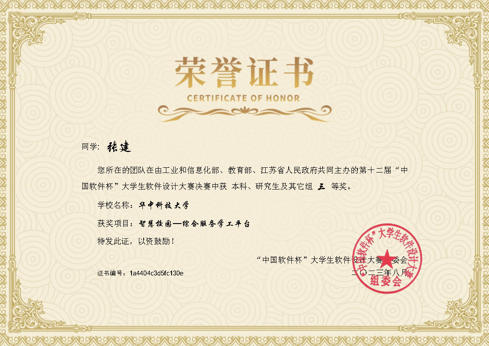
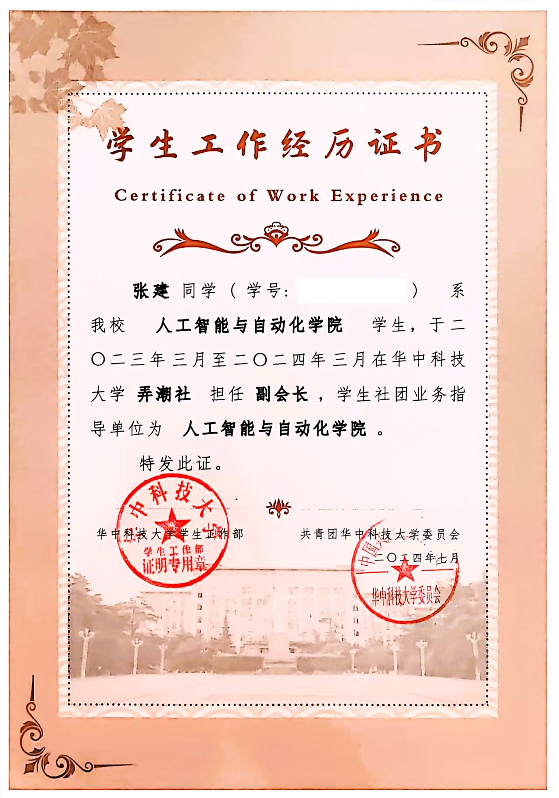
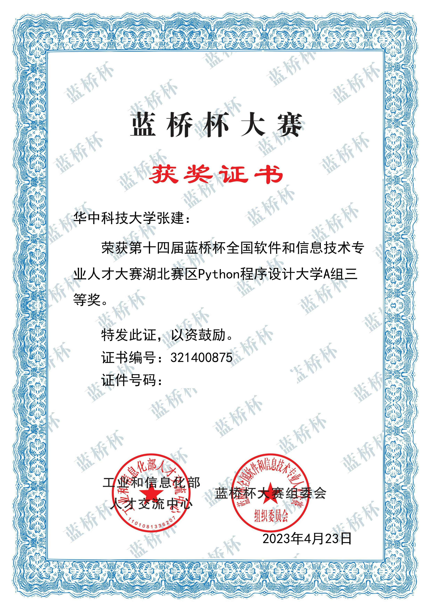
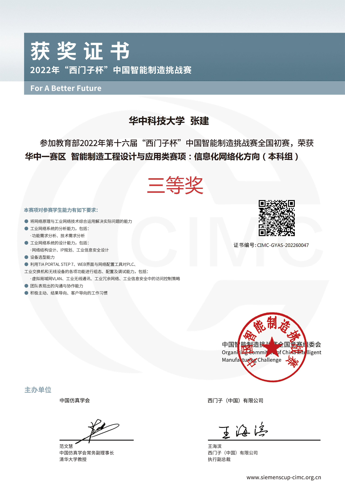

张建
求职意向：AI产品经理
电话: 15237776378
求职意向：AI产品经理
电话: 15237776378
2024 - 至今
主修课程：智能计算系统、机器人导论、现代最优化理论与方法、工业视觉检测等
2019 - 2022
专业排名前5%。主修课程：模式识别、计算机网络、数据结构、C语言、自动控制原理、电力拖动、电力电子技术、模电、数电等
2023.6 - 2023.8
金蝶云苍穹低代码开发平台、智慧学工管理系统 | 工信部/教育部赛事，团队队长、核心开发
简要介绍：担任弄潮社副社长带领组织团队借助金蝶云苍穹低代码开发平台搭建智慧学工管理系统
2024.5 - 至今
前端框架Vue+后端框架FastAPI | 国自然重点项目，核心开发
简要介绍：研发通用调度分析工具软件，为复杂航天任务提供全流程支持
2025.4 - 2025.6
LLama-Factory、LoRA、Agent规划理论 | 科研探索项目，独立开发
基于华科高性能计算平台进行大模型微调；进行Agent规划技术相关的科研探索。
2022.9 - 至今
ROADMAP、飞书 | 个人项目，独立维护
汇总、整理分类值得学习和借鉴的开源项目，方便后续使用和深入研究，涵盖软件类和硬件类各种开源项目



